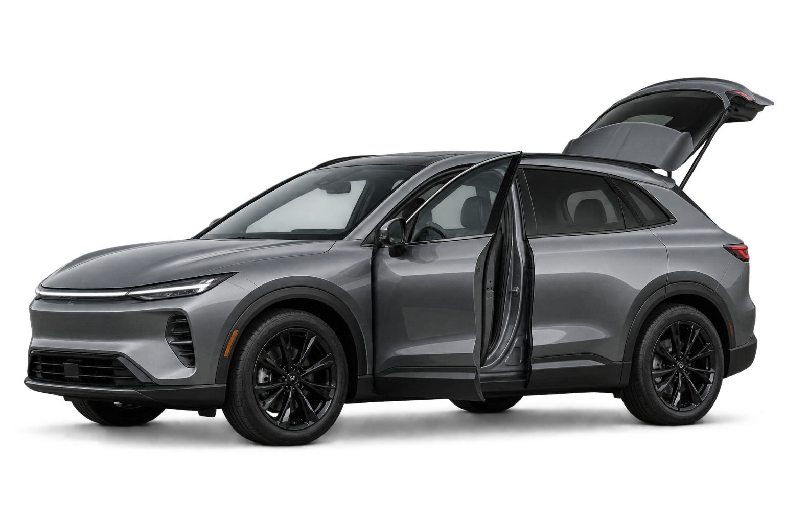
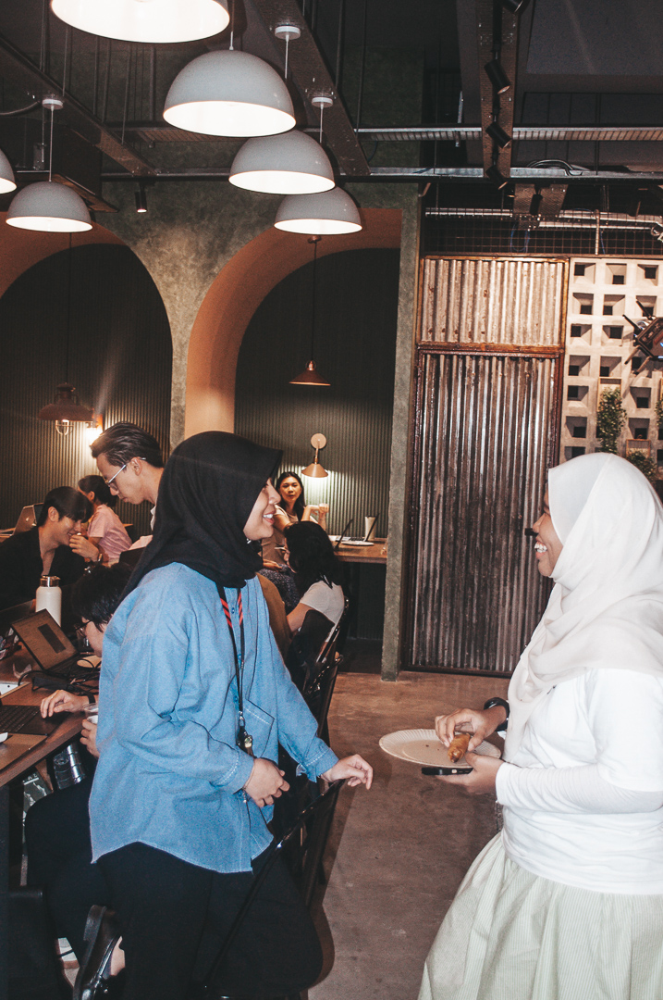
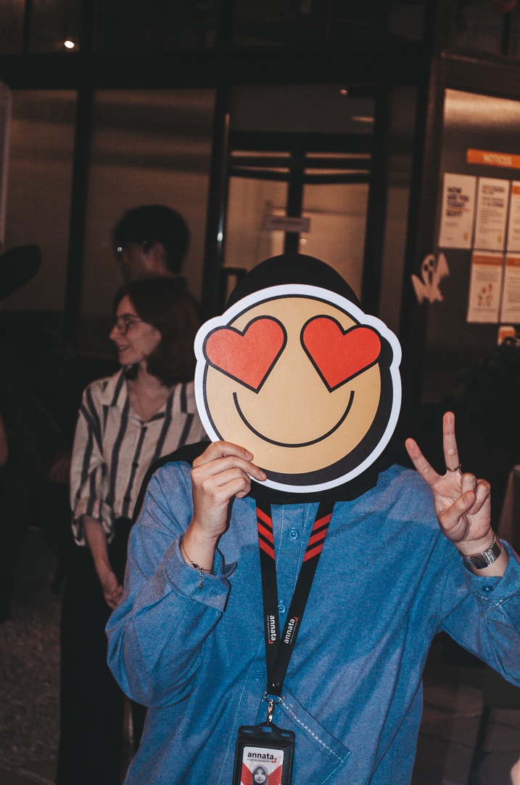
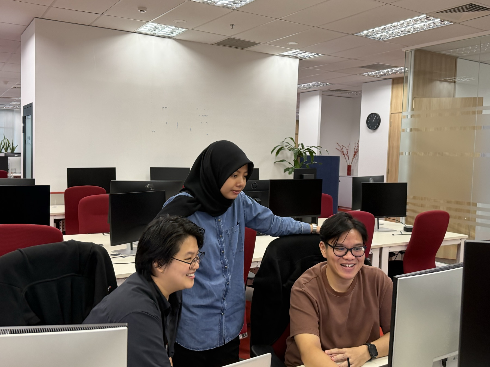

Automotive
Sales · Service Centre · Workshop Mechanic · Dealer Management
I’m Intan Mohd Supian, a UI/UX Design Lead at Annata. I lead design direction and bring end-to-end product design expertise to complex digital experiences.

Sales · Service Centre · Workshop Mechanic · Dealer Management
Sales Invoicing · Payment Tracking · Reporting · Inventory · Tax · FX
Fleet & Last Mile · Video Streaming · Cryptocurrency Exchange · Campus Management System
Design leadership shaped by products with very different needs, people, and systems.
A snapshot of the product areas I’ve led, alongside an independent experiment in mind mapping.
Led design across automotive sales, service centre experiences, mechanic applications and dealership products.
Led design efforts across invoicing, taxation, financial reporting and currency exchange.
A lightweight mind-mapping app I built over weekends to help process thoughts and feelings across different emotional states.
I stay hands-on with the product while supporting teams and bringing customers into the design process.
As an individual contributor, I work with cross-functional product and engineering partners from discovery through delivery.
I interview designers, help build and manage teams, and stay involved in Scrum activities.
I lead and moderate customer engagements globally, keeping real needs close to product decisions.
I’m a product designer and strategic thinker with over six years of experience. I lead design direction and work across the full product journey, collaborating with global and cross-functional teams.
Outside work, I’m a lifelong learner drawn to storytelling, architecture, cinematography and visual arts. Those interests keep shaping how I see and design experiences.



Open to conversations about design leadership, meaningful products, and good teams.